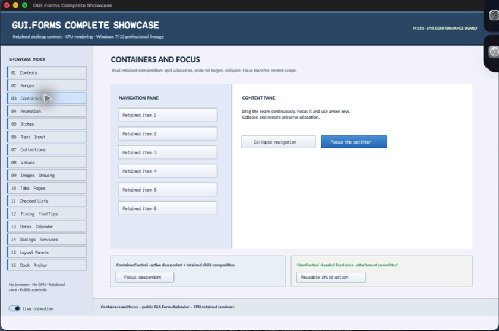

class · visual
SplitContainer
SplitContainer is a retained two-pane allocation state machine with lazy owned infrastructure, bounded distance and min/max constraints, fixed-pane resize preservation, independent visible/hit widths, pointer/keyboard seam input, explicit and automatic collapse origins, focus transfer, semantic range actions, and typed change events.
Visual evidence

Ownership and hierarchy
- Hierarchy
- ContainerControl → SplitContainer
- Declaration
- include/gui_forms/controls/scrollable_control/container_control/split_container/split_container.hpp:42
- Definition
- src/controls/scrollable_control/container_control/split_container/split_container.cpp
Declared methods
SplitContainer public
explicit SplitContainer(StableId stable_id)Constructs two owned SplitterPanels and a source-private SplitterGrip while deferring tree attachment until shared ownership exists.
initialize_control_tree public
void initialize_control_tree()Attaches the two panes and seam exactly once and synchronizes their retained visual policy.
first_panel public
[[nodiscard]] std::shared_ptr<SplitterPanel> first_panel() const noexceptReturns the owned leading/top SplitterPanel.
second_panel public
[[nodiscard]] std::shared_ptr<SplitterPanel> second_panel() const noexceptReturns the owned trailing/bottom SplitterPanel.
splitter_control public
[[nodiscard]] Control::Ptr splitter_control() const noexceptReturns the focusable source-private seam Control for inspection or focus routing.
orientation public
[[nodiscard]] Orientation orientation() const noexceptReturns vertical side-by-side or horizontal top/bottom allocation policy.
set_orientation public
void set_orientation(Orientation orientation)Validates orientation, preserves coherent distance state, updates seam cursor/painting, and invalidates all geometry.
splitter_distance public
[[nodiscard]] double splitter_distance() const noexceptReturns the effective constrained leading-pane extent from the most recent arrangement.
set_splitter_distance public
void set_splitter_distance(double distance)Validates a finite nonnegative request and commits it through the common constrained change/event law.
splitter_width public
[[nodiscard]] double splitter_width() const noexceptReturns the visible seam thickness.
set_splitter_width public
void set_splitter_width(double width)Accepts a finite bounded positive width, preserves hit-width authority, and invalidates geometry/paint.
splitter_hit_width public
[[nodiscard]] double splitter_hit_width() const noexceptReturns the independent pointer hit-target thickness centered on the visible seam.
set_splitter_hit_width public
void set_splitter_hit_width(double width)Accepts a finite bounded width no smaller than the visible seam and invalidates hit geometry.
first_minimum public
[[nodiscard]] double first_minimum() const noexceptReturns the minimum admitted leading/top pane extent.
set_first_minimum public
void set_first_minimum(double extent)Validates a finite nonnegative bound and reconstrains current/requested distance.
second_minimum public
[[nodiscard]] double second_minimum() const noexceptReturns the minimum admitted trailing/bottom pane extent.
set_second_minimum public
void set_second_minimum(double extent)Validates a finite nonnegative bound and reconstrains current/requested distance.
first_maximum public
[[nodiscard]] std::optional<double> first_maximum() const noexceptReturns the optional maximum leading/top extent.
set_first_maximum public
void set_first_maximum(std::optional<double> extent)Validates an optional finite ordered bound and reconstrains allocation atomically.
second_maximum public
[[nodiscard]] std::optional<double> second_maximum() const noexceptReturns the optional maximum trailing/bottom extent.
set_second_maximum public
void set_second_maximum(std::optional<double> extent)Validates an optional finite ordered bound and reconstrains allocation atomically.
first_collapsed public
[[nodiscard]] bool first_collapsed() const noexceptReports whether the leading/top pane is intentionally absent from allocation.
first_collapse_origin public
[[nodiscard]] SplitCollapseOrigin first_collapse_origin() const noexceptReturns none, programmatic, user, or automatic-accommodation origin for the current first-pane collapse.
set_first_collapsed public
void set_first_collapsed( bool collapsed, SplitCollapseOrigin origin = SplitCollapseOrigin::programmatic)Commits exclusive collapse/restore, remembers useful distance, transfers focus safely, and publishes a collapse-reason change.
second_collapsed public
[[nodiscard]] bool second_collapsed() const noexceptReports whether the trailing/bottom pane is intentionally absent from allocation.
second_collapse_origin public
[[nodiscard]] SplitCollapseOrigin second_collapse_origin() const noexceptReturns the recorded origin for the current second-pane collapse.
set_second_collapsed public
void set_second_collapsed( bool collapsed, SplitCollapseOrigin origin = SplitCollapseOrigin::programmatic)Commits exclusive collapse/restore, remembers useful distance, transfers focus safely, and publishes a collapse-reason change.
splitter_fixed public
[[nodiscard]] bool splitter_fixed() const noexceptReports whether ordinary pointer/keyboard distance changes are disabled.
set_splitter_fixed public
void set_splitter_fixed(bool fixed)Toggles resizing while leaving an explicitly configured collapse tab independently operable.
fixed_panel public
[[nodiscard]] SplitFixedPanel fixed_panel() const noexceptReturns none, first, or second resize-preservation policy.
set_fixed_panel public
void set_fixed_panel(SplitFixedPanel panel)Validates fixed-pane vocabulary and selects which pane keeps its extent when the container axis changes.
collapse_panel public
[[nodiscard]] SplitFixedPanel collapse_panel() const noexceptReturns the optional pane controlled by the compact seam tab.
set_collapse_panel public
void set_collapse_panel(SplitFixedPanel panel)Validates collapse-target vocabulary and updates seam appearance and semantic actions.
automatic_collapse_threshold public
[[nodiscard]] double automatic_collapse_threshold() const noexceptReturns the consumer-authored axis threshold below which the collapse target may be accommodated.
set_automatic_collapse_threshold public
void set_automatic_collapse_threshold(double extent)Accepts a finite nonnegative threshold and reconciles only automatic-origin collapse/restore transitions.
keyboard_increment public
[[nodiscard]] double keyboard_increment() const noexceptReturns the logical distance applied per splitter arrow-key action.
set_keyboard_increment public
void set_keyboard_increment(double increment)Accepts a finite bounded positive increment and invalidates semantic range metadata.
splitter_changed public
[[nodiscard]] Event<const SplitChangeEvent&>& splitter_changed() noexceptReturns typed transitions containing old/new distance, input reason, and collapse origin.
measure public
[[nodiscard]] Size measure(Size available) overrideMeasures both panes and combines their desired extents with the visible seam according to orientation/collapse state.
arrange public
void arrange(Rect final_bounds) overrideInitializes the tree, reconciles automatic collapse and fixed-pane resize laws, constrains distance, and assigns two panes plus centered hit seam.
on_pointer_preview public
void on_pointer_preview(PointerEvent& event) overrideOwns seam/collapse-tab pointer capture, preserves drag offset, applies constrained distance continuously, and terminates safely on release/cancel.
on_key_preview public
void on_key_preview(KeyEvent& event) overrideHandles orientation-aware arrows on the focused seam and Enter/Space collapse-tab activation.
semantic_descriptor public
[[nodiscard]] SemanticDescriptor semantic_descriptor() const overrideProjects the container as a split pane with range value and collapse actions.
on_semantic_action public
bool on_semantic_action(SemanticAction action, std::string_view value) overrideRoutes increment/decrement/set-value and collapse/expand through the same constrained state machine.
axis_extent private
[[nodiscard]] double axis_extent(Rect bounds) const noexceptReports the current axis extent value without mutation.
pointer_axis private
[[nodiscard]] double pointer_axis(Point point) const noexceptReports the current pointer axis value without mutation.
constrained_distance private
[[nodiscard]] double constrained_distance(double requested, double total_extent) const noexceptReports the current constrained distance value without mutation.
collapse_tab_bounds private
[[nodiscard]] Rect collapse_tab_bounds() const noexceptReports the current collapse tab bounds value without mutation.
collapse_target_is_collapsed private
[[nodiscard]] bool collapse_target_is_collapsed() const noexceptReports the current collapse target is collapsed value without mutation.
collapse_target_origin private
[[nodiscard]] SplitCollapseOrigin collapse_target_origin() const noexceptReports the current collapse target origin value without mutation.
toggle_collapse_target private
void toggle_collapse_target(SplitCollapseOrigin origin)Public SplitContainer operation. Its exact signature is inventoried here; follow the linked implementation for callback order and failure behavior.
reconcile_automatic_collapse private
void reconcile_automatic_collapse(double total_extent)Public SplitContainer operation. Its exact signature is inventoried here; follow the linked implementation for callback order and failure behavior.
set_distance private
void set_distance(double distance, SplitChangeReason reason)Synchronously updates the retained distance property. Validation, typed invalidation, and notifications are defined by the implementation.
transfer_focus_from private
void transfer_focus_from(const std::shared_ptr<SplitterPanel>& panel)Public SplitContainer operation. Its exact signature is inventoried here; follow the linked implementation for callback order and failure behavior.
update_splitter_cursor private
void update_splitter_cursor()Public SplitContainer operation. Its exact signature is inventoried here; follow the linked implementation for callback order and failure behavior.